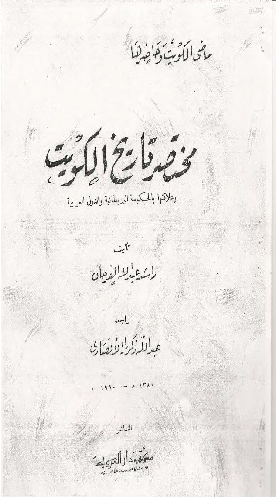
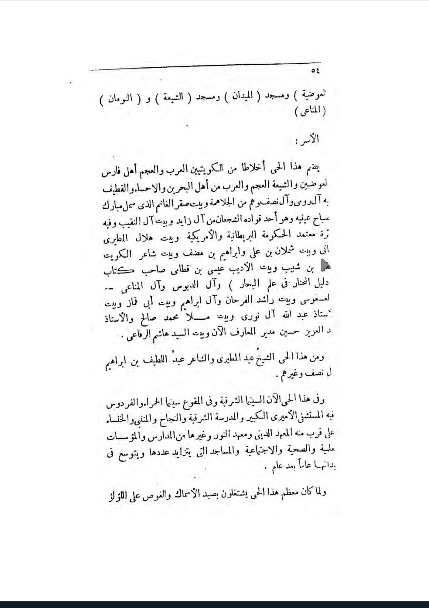

1380 AH (1960) · Book, Mukhtasar Tarikh Al-Kuwait wa ‘Alaqatuha bil-Hukuma Al-Baritaniya wal-Duwal Al-‘Arabiya, by Rashid Abdullah Al-Farhan, reviewed by Abdullah Zakariya Al-Ansari, Maktabat Dar Al-‘Uruba, 1960
Rashid Al-Farhan, Mukhtasar Tarikh Al-Kuwait: Eissa Al-Qatami, Abdulaziz bin Qatami and Masjid Al-Qatami
What it is
1. Page 54, the families of the Sharq quarter: «the house of the man of letters Eissa bin Qatami, author of the book Dalil Al-Muhtar fi ‘Ilm Al-Bihar». 2. Page 55, among the best known nakhudas of the Sharq quarter: «Eissa Al-Qatami, Shaheen Al-Ghanim and Abdulaziz bin Qatami». 3. The chapter on the work of the people: the book Dalil Al-Muhtar fi ‘Ilm Al-Bihar, printed in India more than forty years earlier, «by its author Eissa Al-Qatami of Kuwait», shows how far Kuwaiti seamen’s knowledge had reached. 4. The chapter on mosques: «Masjid Al-Qatami in the Sharq quarter».
Why it matters
One of the earliest printed histories of Kuwait places the Al-Qatami house, its nakhudas and its mosque in the Sharq quarter, and names Eissa Al-Qatami as the author of Dalil Al-Muhtar.
Who is meant
Abdulaziz bin Qatami, listed with the nakhudas, is taken to be Abdulaziz Abdulwahab Al-Qatami, the nakhuda of the Sharq quarter in the same period.
Page copies


Notes
Only the first pages are shown here. Family members who sign in can see all 5 pages.
Sources
Rashid Abdullah Al-Farhan, Mukhtasar Tarikh Al-Kuwait wa ‘Alaqatuha bil-Hukuma Al-Baritaniya wal-Duwal Al-‘Arabiya, reviewed by Abdullah Zakariya Al-Ansari, Kuwait: Maktabat Dar Al-‘Uruba, 1380 AH (1960), pages 54 and 55 and the chapters on the work of the people and on mosques.
How this text was made: The page numbers of the two chapter pages are still to be added.
Open in the interactive site